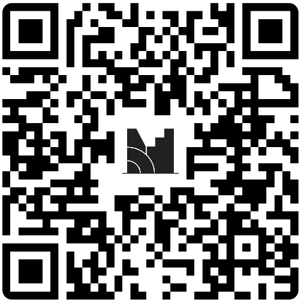
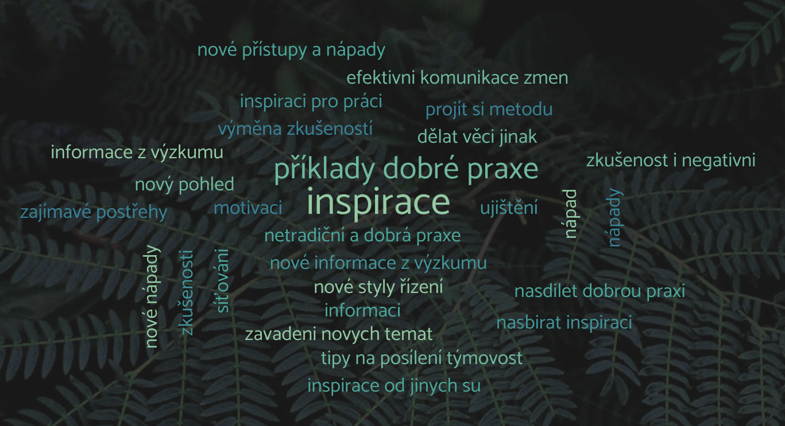
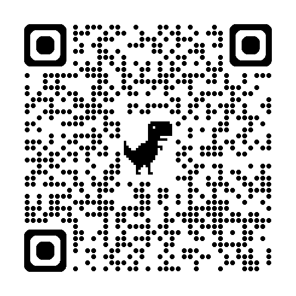

Inovační týmy státní správy
Jak posílit týmovou spolupráci bez složitých změn?
inovacnitymystatnispravy.cz
Hotel Spiritka
05.05.2025
Úvodní slovo
Cíle dnešního setkání
Představit výsledky výzkumu o
fungování inovativních týmů
ve státní správě
Navázat sdílením praktických zkušeností a příkladů dobré praxe
Rozvinout nápady na
konkrétní malé změny
, které lze brzy implementovat
Podpořit vzájemnou inspiraci a navázání neformálních spojení
Představení týmu
Působíme v rámci
KISK FF MUNI
Katedra informačních studií a knihovnictví
Spojuje nás distanční studium
DIS
Design informačních služeb
Připravujeme a vedeme kurzy
Také působíme v privátním, neziskovém i veřejném sektoru
Workshopem provází
Veronika Dufek
Anežka Müller
Johana Šperlová
Petr Havlíček
Barbora Obračajová
František Pfann
Erik Vaněk
Průběh setkání
Úvodní slovo, program dne a seznámení s výzkumem
10:00–10:30 (teď)
1. část
– 3 moderované skupinové diskuze
10:30–11:40
Pauza na oběd (11:40–12:30)
2. část
– malý krůček k opatření
12:30–13:55
Reflexe, rozloučení (13:55–14:00)
Logistika
Nebojte se v průběhu libovolně občerstvit ☕
Možnosti jsou:
Vodu máte na stolech
Kávu si lze požádat v restauraci na baru
Občerstvení naleznete ve vstpuní hale
Oběd se bude servírovat v restauraci
Toalety jsou v patře pod námi
Pravidla
Vzájemný respekt
během diskuze
Jste tu dobrovolně a ze zájmu
"Žádný nápad není špatný"
Možná jen nepřišel ve správný moment
Nebojte se kdykoli ptát při nejasnostech
Pro hladší průběh diskuze použijte
jmenovky
Průběh workshopu
Brožura
Použijte brožuru pro zaznamenávání inspirace
Zápisový arch na poznámky při aktivitách
Víme, že existuje spousta bariér
Dnes se ale
záměrně soustředíme na pozitivní příklady
a možná řešení
Dnes nezměníme systém
Prostor pro hledání
malých, realizovatelných změn
Očekávání od workshopu
Jaká máte očekávání?
Co si chcete odnést?

Proč inovativní týmy?
Začali jsme obecně – inovace ve veřejné správě
Všechny nás zajímá téma
inovací
Zkoumání inovací ve státní správě nás dostalo k tématu
fungování týmů
Inovace = schopné a funkční týmy
Posilování inovativního prostředí
Co jsme zkoumali?
3 výzkumné otázky
Jak fungují týmy, které úspěšně transformují státní správu?
Za jakých okolností tyto týmy vznikají?
Co těmto týmům umožňuje státní správu transformovat?
Co jsme zjistili?
Výstup formou
12 zjištění
– QR a web v brožuře
Příklady zjištění:
Podpora vedení při prosazování změn
Dopad jako silný zdroj motivace
Využívání konceptu "učící se organizace"
Síťování pomáhá v náboru i atmosféře v týmech
Týmy vzniklé "na zelené louce" mají větší svobodu
Proč tento workshop?
Vybrali jsme
3 nejvhodnější témata
z výzkumu pro společnou diskuzi
Vhodnost = témata, která lze měnit z pozice jednotlivců
Formou moderované diskuze všechna detailněji prozkoumáme
Po obědě budeme tvořit návrhy změn, která můžete brzy realizovat
Po dnešním workshopu bychom rádi sepsali případovou studii
2 části workshopu
1. část
– 3 moderované diskuze v menších skupinách
Každý projde 3 diskuze – každý stůl má jiné téma
Míchání lidí napříč skupinkami po 18 minutách
Pauza na oběd
2. část
– návrhy malých změn
Po pauze výběr tématu pro
hlubší rozpracování
v 2. části
Navazuje a vychází z diskuze v 1. části
1. část detailněji
Témata:
Nábor talentu
, dlouhodobá motivace a udržení kvalitních lidí v týmu – Veronika a Anežka
Učící se týmy
, posilování důvěry a využívání principů "učící se organizace" – Johana a Petr
Síťování
a vytváření vztahů napříč organizacemi a odděleními – František a Barbora
Na projektoru poběží časovač
Po uplynutí času změna stolu dle instrukcí
Co bude po obědě?
Vyberete si jedno ze 3 témat, kterému se chcete hlouběji věnovat
Projdeme si procesem návrhu
malé a proveditelné změny
Více podrobností po obědové pauze
Vyčištěný pracovní prostor
Otázky, než začneme? 🙋
Časovač
časovač
Výběr stolu pro 2. část
Jaké diskutované téma vás nejvíce zaujalo?
Víte jaké téma chcete hlouběji zkoumat po pauze?
Můžete se prosím přihlasit pro téma
Nábor a udržení talentu
Učící se týmy
Síťování
Pauza na oběd (11:40–12:30)
Jak posílit týmovou
spolupráci bez
složitých změn?
Průběh 2. části
Vyberte si téma, u kterého
pro vás byla v 1. části nejzajímavější debata
Za chvíli bude ještě prostor pro přesednutí
Ideální je podobné množství lidí u všech stolů
Shrneme diskuze z 1. části
Navážeme individuální prací
Individuální práce
Cíl:
Rozpracování konkrétních návrhů malých změn
Zamyšlení se nad nápadem či aktivitou, které:
Vás zaujaly v první části
Chtěli byste si je sami vyzkoušet nebo se jimi inspirovat ve své práci
Poté vybereme ty nejvíce perspektivní a rozpracujeme
V druhé polovině budeme společně hledat cesty k tomu, jak tyto nápady vylepšit
Celým procesem vás u stolů provedeme
Volba témat
Poslední šance na změnu stolu
Nábor a udržení talentu
Učící se týmy
Síťování a vytváření vztahů
Otázky, než začneme? 🙋
:
Závěrečné sdílení
Jaký byl první malý krok, kterým se změna rozběhla?
Jak ta změna dnes vypadá – čeho jste díky ní dosáhli?
Jaké si odnášíte dojmy?


Budeme rádi za zpětnou vazbu
Díky! ❤️